A step-by-step guide for ops and admin staff using Back Office → Imports: turning a Facebook rental advert into a listing, with the owner's permission, from paste to live.
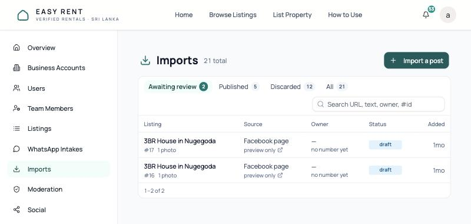
easyrent.lk/back-office/importsVersion 1.0 · 5 November 2026
Contents
How to read this guide
Chapters 1–3 are the background you need once. Chapters 4–7 are the import itself, in the order you do it. Chapter 8 is the page to keep open while you work: every message the screens can show, what it means, and what to do about it.
All screenshots are from the live Back Office at easyrent.lk, taken on 5 November 2026 without creating an import or messaging anyone. Owner names and phone numbers are blurred. Orange numbers on a screenshot match the numbered notes under it. The example advert typed into some screens is invented.
1What the importer does
Landlords advertise rentals in Facebook groups and on Facebook pages every day. The importer lets you take one of those adverts and turn it into an Easy Rent listing, but only if the owner agrees.
You paste the advert, check and complete the draft, then get the owner's permission. When the owner says YES, Easy Rent creates a free landlord account for their phone number, publishes the listing, and sends them a link to edit or remove it. Tenants then contact the owner directly. Easy Rent never sits in the middle and never charges for the listing.
Who can use it: staff with the ops or admin role, once the feature is switched on (chapter 2). Every action is recorded in the audit log under your name, including any consent you confirm yourself.
The four rules that shape everything
Nothing publishes without a yes
A draft becomes a listing only when the owner replies YES on WhatsApp, or when you confirm that they agreed by phone or chat. There is no other route.
Silence means no
If the owner never replies, nothing is ever published. There is no timeout that publishes anyway. Most imports end like this, and that is expected.
One ask per owner
The WhatsApp request can be sent once per import. A second unsolicited message to a stranger is harassment and harms our WhatsApp account.
A NO deletes
If the owner replies NO, we delete the advert text, photos and name we were holding. Only a record that they declined is kept, so they are never asked again.
The whole flow at a glance
2Before you start: settings that must be on
Three switches in Back Office → Settings control the importer. An admin changes them. Changes can take up to 30 seconds to reach every server.
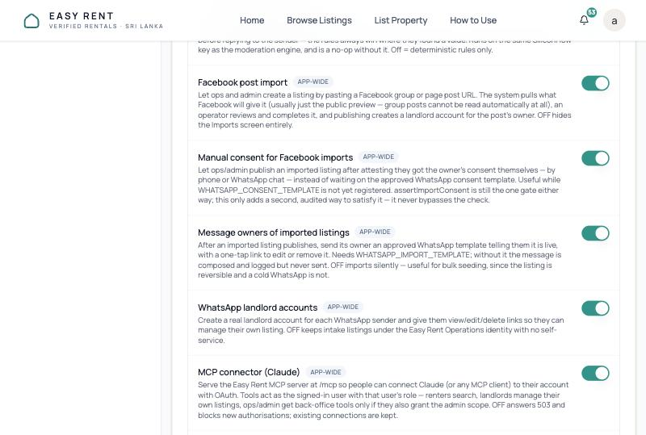
Figure 1. Back Office → Settings, Platform group. All three are on in production.
1Facebook post import (enableFacebookImport). Required. When it is off, the Imports screen does not exist (404) and every import action is refused.
2Manual consent for Facebook imports (allowManualImportConsent). Optional. Adds the Publish — I already have consent button for when you have spoken to the owner yourself. It is the only way to publish a pasted advert that has no Facebook post behind it.
3Message owners of imported listings (notifyImportedOwners). Required for WhatsApp. It controls both messages: the consent request and the go-live notice. When it is off, both are written to the server log and never sent, so no owner can ever reply YES. The settings description only mentions the notice, but the switch governs the request too.
What else has to be in place (admin / developer)
Setting
What it does, and what you see if it is missing
WHATSAPP_CONSENT_TEMPLATE Meta template listing_consent_request
The approved WhatsApp message that asks the owner for permission. If it is missing, the review screen shows a red "Nothing here can be published yet" (or "The Ask the owner button cannot reach them yet") banner, and asking only logs the message.
WHATSAPP_IMPORT_TEMPLATE Meta template listing_imported_notice
The go-live notice sent once the listing is live. If it is missing, the list and review screens show an amber "Owners are not being messaged" banner. Listings still publish, but the owner is never told.
NEXT_PUBLIC_WHATSAPP_SUPPORT
Our WhatsApp number. It is used for the clickable link in the invite comment. Without it the comment just says "Send us a WhatsApp message".
Automated listing approval Settings switch, on in production
Not an import setting, but it decides what happens after YES. When it is on, a new listing starts as pending and goes live once the automated checks pass. When it is off, it goes live immediately.
Quick health check: open any draft. If there is no red or amber banner near the top, both WhatsApp templates are configured. If there is one, read it before you ask anybody anything.
3The Imports screen
Open Back Office → Imports (/back-office/imports). Each row is one advert you have brought in. Click a title to open its review screen, where all the work happens.
Figure 2. The Imports list, on the default Awaiting review tab.
1Import a post starts a new import (chapter 4).
2Tabs.Awaiting review shows drafts only. Published and Discarded show what their names say. Imports that are awaiting consent or declined have no tab of their own and appear only under All.
3Search matches the post link, the advert text, the owner's name or number, or an import number such as #17.
4Source shows where it came from and how much Facebook gave us: full post, preview only, or pasted by hand. The small arrow opens the original post.
5Owner is the name and number you confirmed. no number yet means the owner's phone has not been filled in.
6Status, plus a link to the listing once one exists and a badge if the owner's go-live notice did not go out (see the table below).
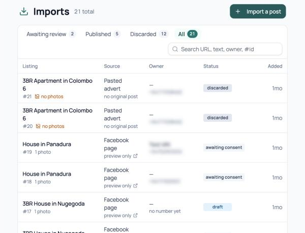
Figure 3. The All tab. Owner details blurred.
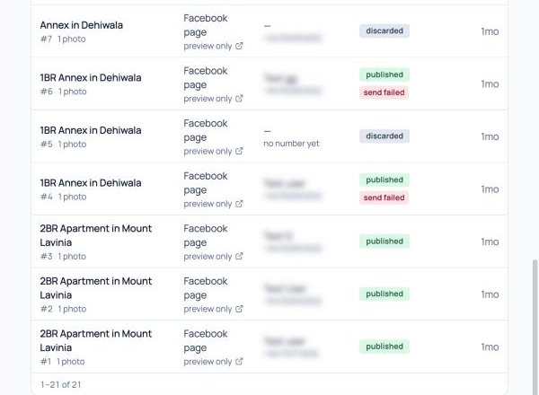
Figure 4. Published imports, two with a failed notice.
1Use All to follow imports you have already asked about.
2Pasted advert · no original post: an import made from text only (chapter 4, path B).
3awaiting consent: the owner has been asked and has not replied YES or NO.
4published: the owner agreed and a listing was created. This does not mean the listing is live yet (chapter 7).
5send failed: WhatsApp rejected the go-live notice. Contact the owner another way.
Statuses and badges
You see
Meaning
draft
Imported and waiting for you to complete it and get consent. Nothing is public.
awaiting consent
The WhatsApp request was sent (or WhatsApp rejected it). Waiting for YES or NO. Nothing is public, and if they never answer it stays like this.
published
Consent was given and a listing row was created. The listing may still be pending automated checks. Check the listing's own status.
declined
The owner replied NO. Their advert text, photos and name have been deleted. Do not import the same advert again.
discarded
You discarded the draft. Nothing was sent.
owner notice queued
The listing is pending the automated checks. The go-live notice goes out when it passes.
not sent
The go-live notice was written and logged but not delivered, because the template is missing or owner messaging is switched off.
send failed
WhatsApp rejected the go-live notice. Tell the owner another way (call, or message from the business WhatsApp).
4Step 1 · Start an import
Click Import a post. The screen has two boxes, and you can fill either or both.
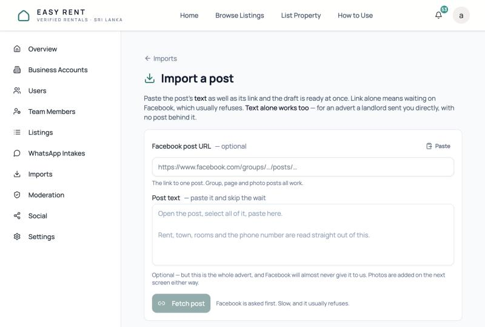
Figure 5.Import a post, before anything is pasted.
1Facebook post URL: the link to one specific post. Group posts, page posts and photo posts all work. A profile or a group's home page does not.
2Paste reads your clipboard into the right box. If you copied a share that has the post's first line and the link together, the link is pulled out for you.
3Post text: the whole advert. This is the most important input. Rent, town, rooms and phone number are read from it.
4The button changes depending on what you filled in: Fetch post (link only) or Create draft (text given). With nothing filled in it is disabled. On a keyboard, ⌘/Ctrl + Enter in the text box submits.
Choose your path
Path
You fill in
What happens
A · Link + text recommended
The post link and the full advert text
Instant. Facebook is not contacted, your text is parsed, and the review screen opens already filled in. The link is kept as the source, and the owner can be asked over WhatsApp.
B · Text only no post behind it
Just the advert text, for example details a landlord sent the office directly
Saved as a Pasted advert with no original post. The WhatsApp consent request cannot be used, because its approved wording says "we found your advert on Facebook". You publish it with manual consent after speaking to the owner.
C · Link only
Just the post link
Slow. We ask Facebook, which usually refuses (see the table below). You will almost always end up pasting the text on the next screen anyway.
Path A: link and text (do this by default)
Open the advert on Facebook. Copy the post's address: open the post itself (click its timestamp) and copy the URL from the address bar.
Paste it into Facebook post URL.
On the post, click See more so the whole advert is showing, select all of its text and copy it. Paste it into Post text.
Check that the line beside the button reads "Facebook is not asked — your text is used as it is." Click Create draft and do not reload while it saves.
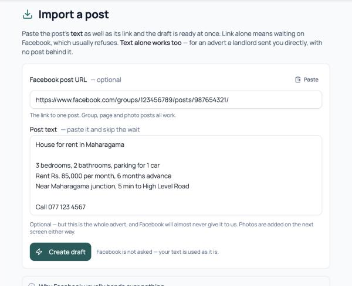
Figure 6. Path A, ready to submit. (Example advert, invented.)
1A valid link shows "The link to one post…" underneath.
2The whole advert, line breaks and all. The box grows as you paste.
3Create draft takes you straight to the review screen.
Path B: text only
Leave the link empty. The hints change to say it will be saved as a pasted advert, and that you will confirm the owner agreed yourself.
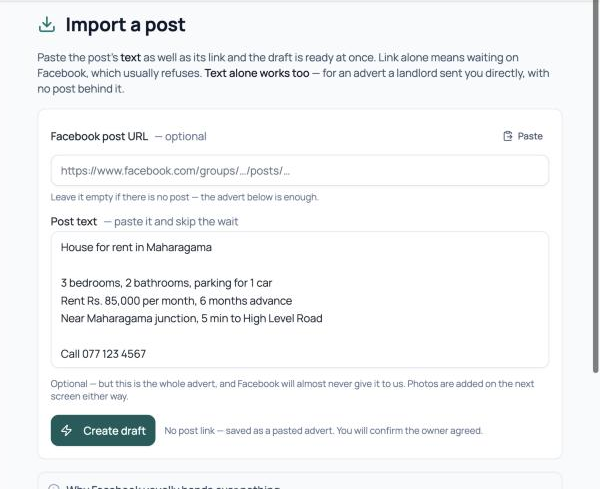
Figure 7. Path B, text only.
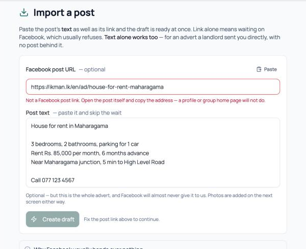
Figure 8. A link that is not a Facebook post.
1"Leave it empty if there is no post — the advert below is enough."
2"No post link — saved as a pasted advert. You will confirm the owner agreed." Publishing this needs the Manual consent switch (chapter 2).
3A link to another site (here, ikman) is flagged in red as you type…
4…and the button stays disabled until you fix or clear it. A link you typed is never silently ignored.
What Facebook will and won't give us
This is the most common surprise, so it is worth knowing before you start. Facebook removed automated access to group posts in April 2024, and reading other pages' posts needs an approval we do not have. What comes back depends on where the advert was posted:
Where the advert is
What we get
Shown as
Easy Rent's own Facebook Page
The full text and every photo
full post
Some public pages
A preview: the first line only, cut off with "…", plus one cover photo. No phone number and no author.
preview only
Facebook groups
A login wall. Nothing.
pasted by hand
Most other pages
A login wall. Nothing.
pasted by hand
"Pasted by hand" is the normal result, not an errorInternally this is resolved_via = 'manual', and it is how most imports look. The review screen is built for it: think of it as a listing editor that sometimes comes pre-filled, not a "confirm what we found" form. Never try to get around the login wall with a personal Facebook login. It breaks constantly and puts Easy Rent's own Facebook Page at risk.
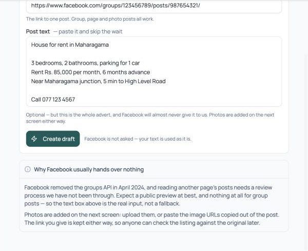
Figure 9. The same explanation is one click away under the form: "Why Facebook usually hands over nothing".
5Step 2 · Complete the draft
After Create draft or Fetch post you land on the review screen for the new import. Work down it from top to bottom. The example below is a real draft where Facebook returned only its public preview.
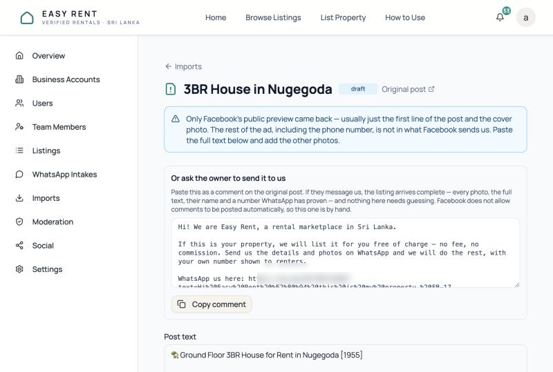
Figure 10. Top of the review screen. Our WhatsApp number in the comment is blurred.
1The status, and Original post, which opens the advert on Facebook. Keep it open in another tab and check everything against it.
2What Facebook gave us. Blue means preview only (first line plus cover photo). Amber means nothing at all, for group posts and login walls. Either way, the next move is to paste the full text.
3The invite comment: a ready-made comment to post under the original advert. It is often the best route to a complete, consented listing (chapter 6, route A).
5.1 Paste the full advert and fill the fields
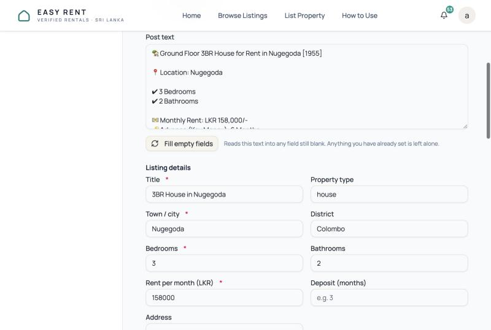
Figure 11. This draft holds only Facebook's preview, which stops at "Half Month's Rent…".
1Post text. Replace the preview with the whole advert from Facebook.
2Fill empty fields reads the text into any field that is still blank. Anything already filled in is left alone, so pressing it twice is safe.
Paste and fill first, then editFill empty fields saves the post text and reloads the form from what is saved. Field edits or photo uploads you have not yet saved are lost. So: paste the text → Fill empty fields → then type corrections → Save draft. If you want a field read again from the text, clear it first, then press Fill empty fields.
5.2 Check the listing details
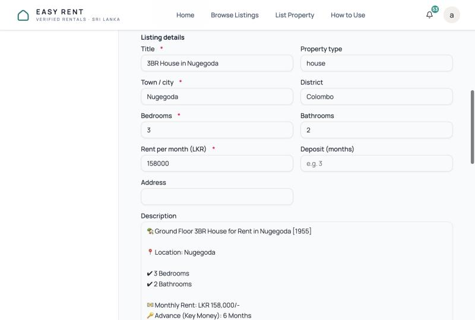
Figure 12. Listing details. A red star means required.
1Title (required, up to 200 characters). Generated titles look like "3BR House in Nugegoda". It is quoted back to the owner in the consent request, so keep it plain and accurate.
2Town / city (required). Check it against the advert. A wrong town is worse than none.
3Bedrooms (required).
4Rent per month (LKR) (required). Numbers only, for example 158000. The parser can miss the rent when "hot water" appears just before it, so always check this one against the advert.
5Property type accepts only house, apartment or room. Anything else (such as "annex") is dropped when you save.
6Deposit (months), bathrooms, district and address are optional but help renters. Enter the advance or key money in months.
5.3 Description and the owner's number
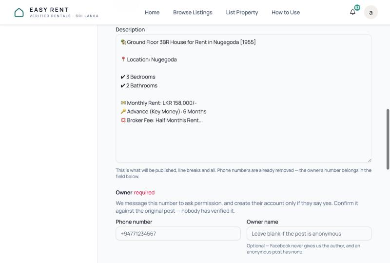
Figure 13. The description is exactly what will be published. The phone box shows its placeholder.
1Description: the advert as it will appear, with line breaks kept. Phone numbers are removed automatically, because the owner's number is shown separately. Tidy wording if needed, but do not cut it short.
2Phone number (required). This is who the consent request goes to and whose account is created if they say yes. Use the owner's mobile: WhatsApp cannot reach a landline, and you only get one ask. Any format works, and it is stored as +94….
3Owner name (optional). Facebook never gives us the author, so fill it in only if the advert names them. It is used to greet them ("Hi Nimal").
Phone chips: "found in the post text"When the saved post text contains phone numbers, they appear as clickable chips above the phone box, labelled found in the post text. Click one to use it. A mobile number (+947…) is pre-selected because only a mobile can receive WhatsApp, even if the advert lists a landline first. The chips are built from the saved text, so they appear after Fill empty fields or Save draft. Nobody has verified this number. Confirm it against the original post before you ask.
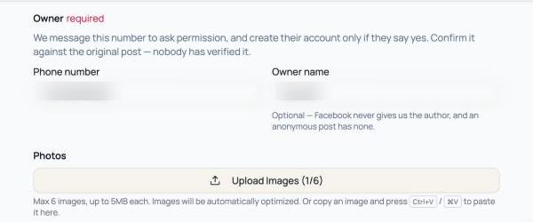
Figure 14. A completed owner section (values blurred). "Confirm it against the original post — nobody has verified it."
5.4 Photos and the cover photo
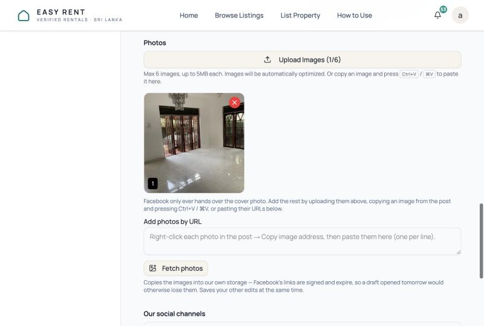
Figure 15. Photos. Facebook only ever hands over the cover photo.
1Upload Images: upload saved photos (JPEG, PNG, WebP or GIF, up to 5 MB each, 6 maximum). You can also copy an image in the browser and press Ctrl+V / ⌘V on this screen.
2The photos so far, numbered. The red × removes one.
3Add photos by URL: on the Facebook post, right-click each photo → Copy image address, and paste one per line.
4Fetch photos copies them into our storage (Facebook's links expire within hours) and saves your other edits at the same time.
When there is more than one photo, a row of Make photo 2 the cover buttons appears. The cover is the photo renters see first in search results, so pick the best exterior or living-room shot. If you have more photos than the limit, an amber note tells you which will be left out. Reorder them to choose.
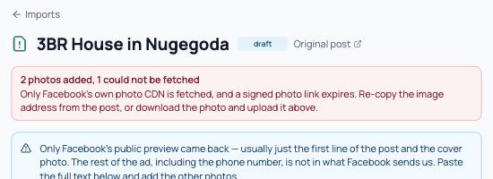
Figure 16. Only Facebook's own photo servers are accepted, and copied links expire. If any are refused, copy the address again or download and upload the photo.
5.5 Social sharing, saving and discarding
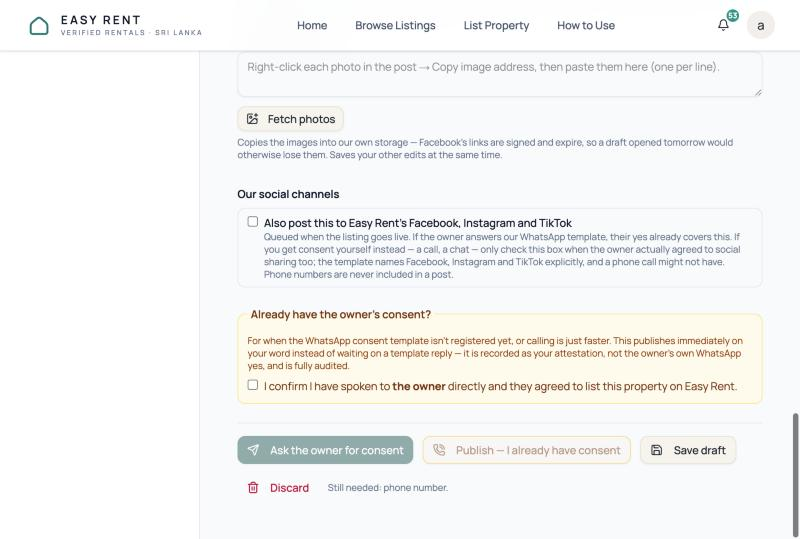
Figure 17. The bottom of the review screen. The consent buttons are covered in chapter 6.
1Also post this to Easy Rent's Facebook, Instagram and TikTok. Tick it to queue social posts when the listing goes live. The WhatsApp consent request names all three platforms, so the owner's YES covers it. If you get consent by phone instead, tick it only if they agreed to social sharing too. Phone numbers never appear in our posts.
2Save draft saves everything on the screen, including the pasted post text. Nothing is public. You see "Draft saved — Nothing is public yet."
3Discard marks the import discarded. Use it for duplicates, sale ads, or anything you won't pursue. A published import cannot be discarded.
4Still needed: … lists what is missing before you can ask: title, town, bedrooms, rent and phone number.
Sale adsIf the advert reads like a property for sale, an amber banner says so. Easy Rent is for rentals only. Check the original, and discard it if it is a sale.
6Step 3 · Get the owner's consent
Nothing is public yet. There are three ways to get permission. Pick one per import:
Route
Best when
Result
A · Invite comment
You can comment on the original post. It works for every advert, including group posts and ads with missing details.
The owner messages us on WhatsApp and the listing arrives complete through the normal WhatsApp intake. This is the strongest consent.
B · Ask the owner for consent
The draft is complete, it came from a Facebook post, and you have the owner's mobile number.
One WhatsApp request with a preview link. The listing is published if they reply YES.
C · Publish — I already have consent
You have spoken to the owner yourself (call or chat). This is the only route for a pasted advert.
The listing is published straight away, recorded as your attestation and fully audited.
Route A · The invite comment
Facebook will not let us read most adverts, so the invite asks the owner to send them to us. Owners who reply this way have opted in clearly, and their listing arrives with the full text, every photo, their name and a number WhatsApp has proven. It also avoids the WhatsApp request's weak spot. That request is a marketing message, and anyone who has switched marketing messages off never receives it, with no error on our side.
On the review screen, click Copy comment in "Or ask the owner to send it to us" (Figure 10, note 3).
Open the original post on Facebook and paste it as a comment, ideally posting as Easy Rent's Facebook Page, since the comment introduces itself as Easy Rent. Facebook does not allow us to post this automatically, so it is always done by hand.
The comment has a WhatsApp link with a reference such as FB-17 (the import number). When the owner messages us with it, ops is notified, and their message becomes a normal WhatsApp intake (Back Office → WhatsApp Intakes).
Once their own submission has arrived, Discard this import draft so the same property is not asked about twice.
The comment (as generated for import #17)
Hi! We are Easy Rent, a rental marketplace in Sri Lanka.
If this is your property, we will list it for you free of charge — no fee, no commission. Send us the details and photos on WhatsApp and we will do the rest, with your own number shown to renters.
WhatsApp us here: https://wa.me/<our number>?text=…FB-17
Please keep the reference FB-17 in your message so we know which advert you mean.
Route B · Ask the owner for consent (WhatsApp)
Make sure the draft is complete. The button is disabled until title, town, bedrooms, rent and phone number are all filled in.
Check the phone number against the advert one more time. You get one ask.
Click Ask the owner for consent. It saves your edits first, then sends the request.
Read the banner that comes back (Figures 18–21). The import moves to awaiting consent.
What the owner receives · approved template "listing_consent_request"
🏠 Easy Rent — may we list your property, free of charge?
Hi Nimal, we found your rental advert for 3BR House in Nugegoda on Facebook. We would like to list it on Easy Rent, a rental marketplace in Sri Lanka, and share it on our Facebook, Instagram and TikTok pages.
It is completely free. We never charge landlords anything, and we never take a commission.
Nothing is published yet — tap below to see exactly how your listing would look.
Reply YES and we will publish it. Reply NO and we will delete everything we hold. If you do not reply, we will not publish it.
Tenants would contact you directly on +94 7X XXX XXXX. Your number is never shown on our social posts.View your listing preview
The button opens a read-only preview page showing the title, rent, rooms, location and up to six photos exactly as they would appear. It does not sign the owner in, and it stops working once they answer. The owner's name, title and number come from your draft, so a typo there is what they will read.
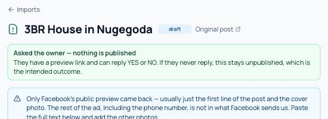
Figure 18. Sent. Now wait.
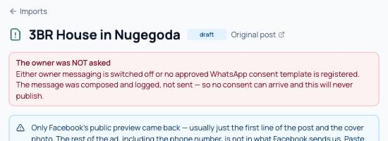
Figure 19. Not sent: a setup problem (chapter 2). You can ask again once it is fixed.
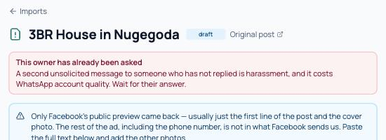
Figure 20. Already asked. A second request is refused.
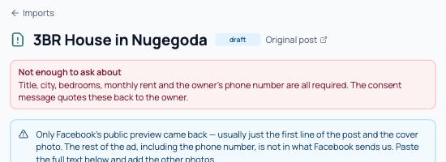
Figure 21. Something required is missing.
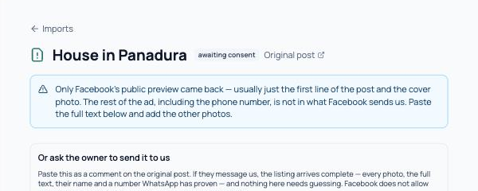
Figure 22. An import waiting for the owner's answer.
What the owner can reply
Owner replies
What happens
YES also: yeah, yep, ok, okay, sure, go ahead, please, ඔව්, හරි, ஆம், சரி
Consent is recorded and the listing is created immediately (chapter 7). The owner gets a WhatsApp confirmation. Tapping YES twice never creates two listings.
NO also: no, stop, cancel, never mind, අවලංගු, ரத்து
Status becomes declined. The advert text, photos, name and preview link are deleted, as the message promised, and the owner gets a confirmation. They will never be asked again.
Anything else "Who is this?", "Yes, how much?", a photo…
It counts as neither. The question is closed and their message goes to normal WhatsApp handling, so a later "YES" will not count either. Follow up with the owner personally and, once they agree, use route C.
No reply
Nothing is ever published. The import stays awaiting consent. A YES is still understood for 30 days. After that it is treated as an ordinary new message.
Route C · Publish — I already have consent
Only shown when Manual consent for Facebook imports is on. Use it when you have actually spoken to the owner (a phone call, or a WhatsApp chat outside the template) and they agreed to the listing. It is also the only way to publish a pasted advert.
Call or message the owner. Confirm the details, that they agree to be listed free on Easy Rent, and, if you will tick social sharing, that they agree to Facebook, Instagram and TikTok posts.
In the amber box "Already have the owner's consent?", tick "I confirm I have spoken to … directly and they agreed…". The box is never pre-ticked.
Click Publish — I already have consent. It saves your edits, records the consent under your name, and publishes.
Figure 23. The consent controls. Both buttons stay disabled until the required fields are filled. The manual one also needs the tick.
1The attestation. It is recorded as your word, not the owner's own WhatsApp yes, and audited.
2Route B. It is hidden for pasted adverts.
3Route C.
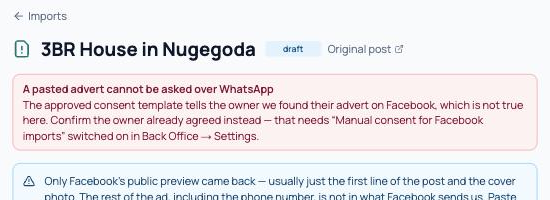
Figure 24. What you see if a pasted advert reaches the WhatsApp route.
Never tick the box on assumptionA screenshot of the advert, the owner "probably wanting it", or a colleague's say-so is not consent. If you have not heard the owner agree, use route A or B instead.
7Step 4 · After YES: going live
When the owner says YES (or you confirm consent), the system takes over:
An account is created for the owner's phone number: a free landlord account. If that number already has an account, the listing is added to it. The number is marked unverified until the owner messages us from it.
The listing is created. With Automated listing approval on (production), it starts as pending, and you get a bell notification: "Imported listing queued for automated checks". With approval off it goes live at once and the notification says "Imported listing published… spot-check it".
The automated checks run within a few minutes. If they pass, the listing becomes active. If they hold it, it waits in Back Office → Moderation for an ops decision, and approving it there counts as going live.
The owner gets the go-live notice on WhatsApp once the listing is actually live. While it is pending, the import shows owner notice queued.
Social posts are queued if you ticked the box. The listing expires after 30 days, like every listing.
🏠 Easy Rent — your property is now listed
Hi Nimal, we saw your rental ad for 3BR House in Nugegoda in Nugegoda on Facebook and listed it on Easy Rent, a rental marketplace in Sri Lanka.
Tenants will contact you directly on +94 7X XXX XXXX.
Tap below to edit the details or take it down — no password needed. Or reply REMOVE and we'll delete it.Manage your listing
"published" on the Imports screen is not the same as liveThe import's status flips to published the moment the listing row is created, even while that listing is still pending in the moderation queue. To know whether renters can see it, open the listing (the Listing #… link on the import) or check Back Office → Listings / Moderation. Look for status active.
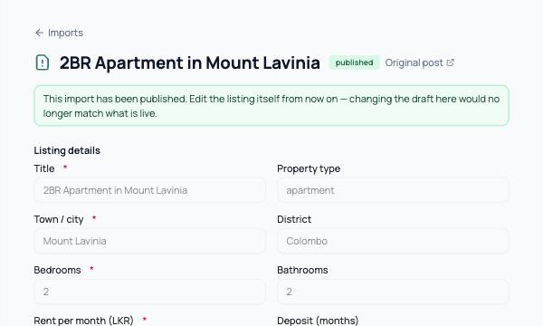
Figure 25. A published import. The draft is locked.
1When a listing exists, a Listing #id link appears next to this badge. Use it to reach the live listing.
2From now on edit the listing itself. The draft no longer controls what is live. The owner can also edit or remove it from their link, or by replying REMOVE.
If something goes wrong after YES
Publishing failed after the owner agreed. Their consent still stands. Ops gets a notification to finish it by hand, and the owner is told it is being processed. For a manual-consent import, press Publish — I already have consent again. It retries without asking twice.
send failed on the go-live notice. The listing is live but the owner does not know. Call them, or message them from the business WhatsApp, with the listing link.
not sent. The import template is missing or owner messaging is off. Fix the setup (chapter 2) and tell the owner yourself. Later fixes do not resend old notices.
8Troubleshooting
Every message the import screens can show, in the order you are likely to meet them.
On "Import a post"
You see
What it means → what to do
"Not a Facebook post link…" (red, under the URL)
The link is not on Facebook, or not a single post. Open the post itself (click its timestamp) and copy the address bar. Or clear the box and import the text only.
"That is not a Facebook post URL we can open…" (red banner after submitting)
The server refused the link. Same fix as above.
"Something went wrong reaching Facebook…"
Facebook did not respond. Paste the post text as well and try again. That skips Facebook entirely.
Fetch post spins for a long time
Expected with a link only. Next time paste the text too and it is instant.
On the review screen
You see
What it means → what to do
Amber: "Facebook does not allow group posts to be read…" or "…served a login wall"
Normal. Copy the text from the original into Post text, press Fill empty fields, add the photos.
Blue: "Only Facebook's public preview came back…"
We have the first line and the cover photo only. Paste the full text, and add the other photos.
Fields empty after Fill empty fields
The text did not contain them, or used wording the reader missed. Type them in by hand.
My typed edits disappeared
You pressed Fill empty fields before saving them. Re-enter, then Save draft.
No phone chips
The saved text has no number in it (common with previews). Save first, or type the number from the advert.
"N photos added, N could not be fetched"
Only Facebook's photo servers are accepted, and copied links expire. Copy the image address again, or download the photo and upload it.
Amber: "Only the first 6 publish…"
Too many photos. Reorder with the cover buttons, or remove some.
Amber: "This reads like a property for sale"
Check the original. Discard sale ads.
"Still needed: …" / "Not enough to ask about"
Fill title, town, bedrooms, rent and the owner's phone number.
Ask the owner for consent is missing
This is a pasted advert (no Facebook post). Use route C, or route A if there is a post to comment on.
Red: "Nothing here can be published yet" / "…cannot reach them yet"
The WhatsApp consent template is not configured. Ask an admin, and use route A or C meanwhile.
Amber: "Owners are not being messaged"
The go-live notice template is not configured. Listings still publish. Tell owners yourself.
After asking for consent
You see
What it means → what to do
Green: "Asked the owner — nothing is published"
Sent. Wait. If there is no answer, that is the answer.
Red: "The owner was NOT asked"
Dry run: owner messaging is switched off, or the consent template is missing. Nothing was recorded as an ask, so you can press the button again once an admin fixes it.
Red: "WhatsApp rejected the consent request"
WhatsApp refused it, usually a bad number or a landline. This does count as your one ask, and the button will now say already asked. Fix the number and get consent by phone (route C) or by comment (route A).
Red: "This owner has already been asked"
One ask per import. Wait for the answer, or follow up personally.
Red: "Could not send the consent request"
Server error. Nothing was published. Try again. If it repeats, report it with the import number.
Owner replied but nothing happened
Their reply was not a plain YES/NO (see chapter 6), or arrived after 30 days. Check WhatsApp Intakes for their message, confirm with them, and use route C.
Red: "Manual consent is switched off"
An admin must enable Manual consent for Facebook imports.
Red: "Confirm you actually have consent"
Tick the attestation box before publishing.
Red: "Consent was recorded, but publishing failed"
Press the button again. It retries without re-asking. If it repeats, report it.
Import says published, listing not visible
It is probably pending automated checks, or held in Back Office → Moderation. See chapter 7.
9Quick reference
Every import, start to finish
Open the advert on Facebook. Click See more. Copy the post link and the whole text.
Back Office → Imports → Import a post. Paste both → Create draft.
On the review screen, check the post text is complete → Fill empty fields.
Check title, town, bedrooms, rent (against the advert), property type and deposit.
Set the owner's mobile number and, if known, their name.
Add photos (upload, paste, or image URLs → Fetch photos). Pick the cover.
Decide on social sharing. Save draft.
Get consent with one route: copy the invite comment and post it, orAsk the owner for consent once, or call them and use Publish — I already have consent.
Follow up under All. On YES, confirm the listing reaches active and that the owner was notified.
Do
Paste the text. Facebook rarely gives it to us.
Check the rent and town against the original.
Use a mobile number for the ask.
Prefer the invite comment for group posts.
Discard duplicates, sale ads and adverts you won't pursue.